Donut
Overthink It.
A two-person integrated marketing campaign for Lịm Donuts, built around one simple idea: make sweet choices feel easier, more social and more memorable.
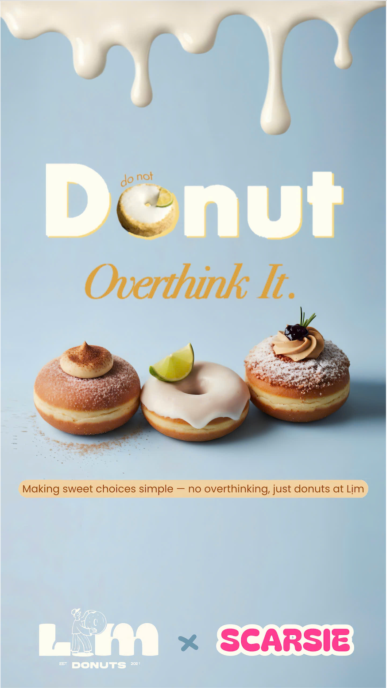
Make choosing
feel effortless.
Donut Overthink It turns choice overload into a playful brand idea. Instead of asking customers to deliberate over too many flavours, the campaign uses curated combos, recommendation cues and light-hearted content to make Lịm feel approachable and easy to choose.
The concept connects an online Gen Z tone with physical touchpoints so the same campaign idea can live across social content, printed collateral and the exhibition booth.
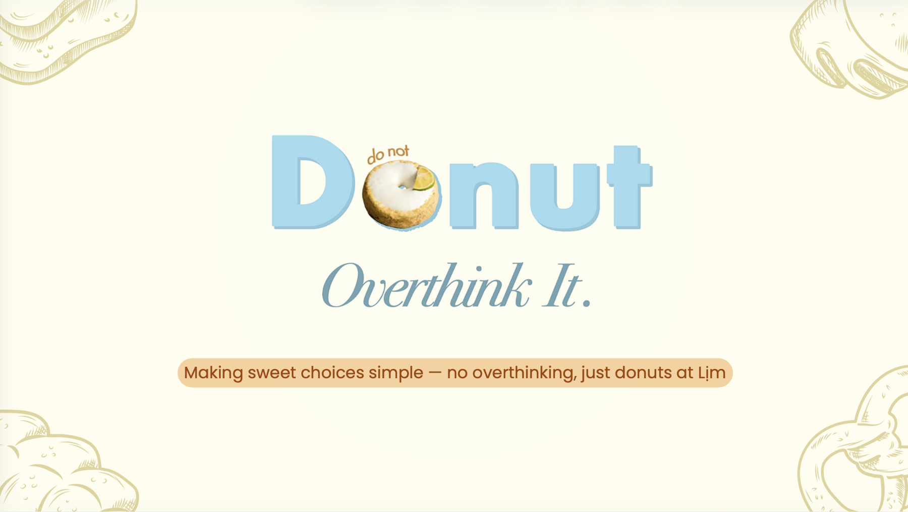
From strategy
to execution.
This was a two-person project. I contributed across campaign planning, strategic direction, key-message development, content ideation, creative concept development, video production, exhibition presentation and the formal written submission.
One idea,
multiple moments.
The campaign was translated into a focused set of online and offline touchpoints designed to simplify choice, encourage participation and keep the visual identity recognisable across the customer journey.
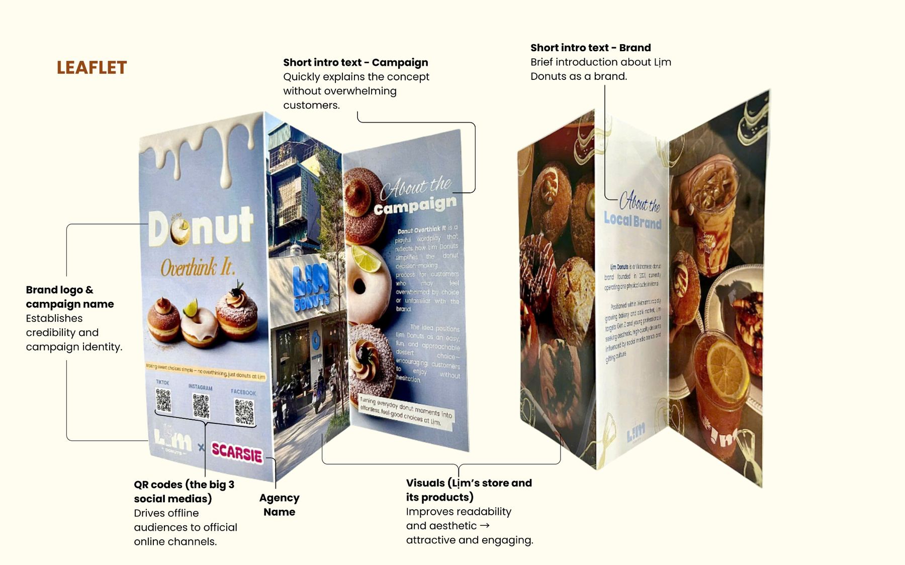
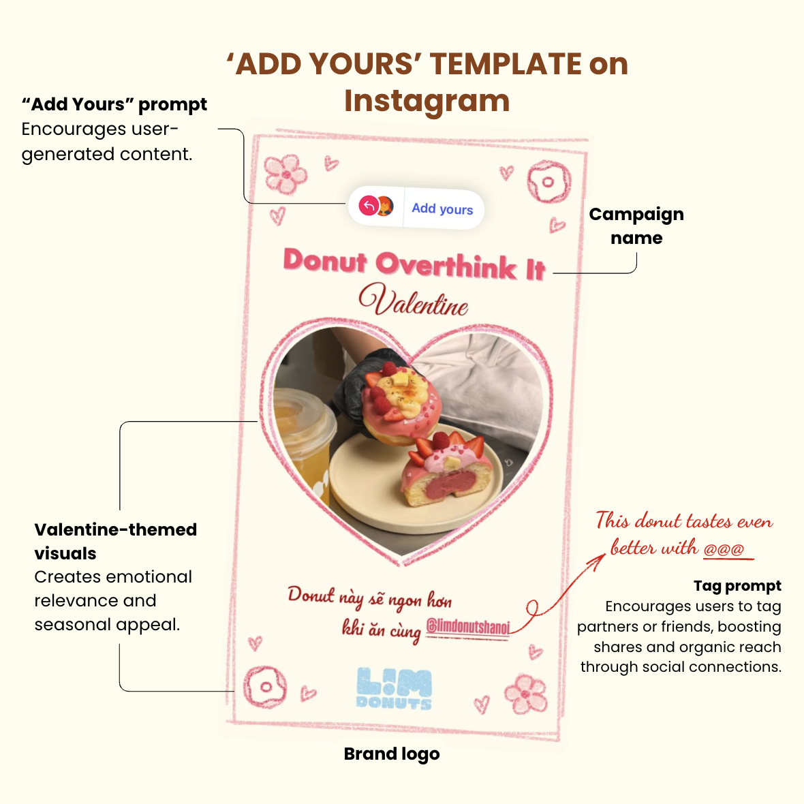
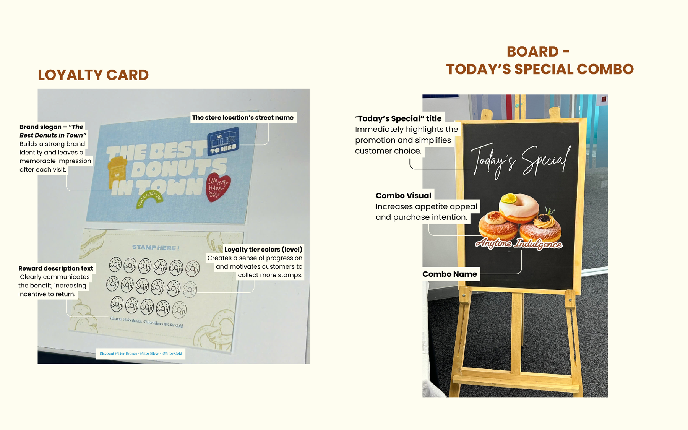
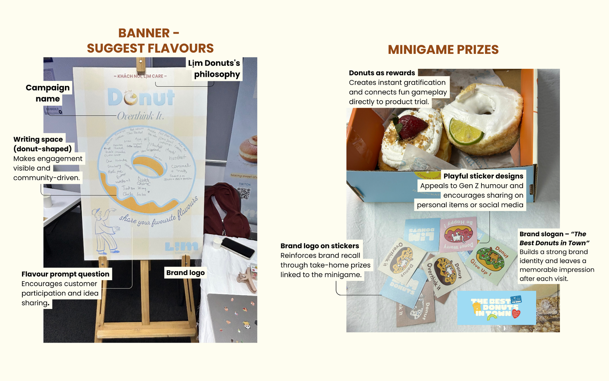
Taking the idea
offline.
At Marketing Exhibit 5.0, the campaign became a live experience. The booth combined product display, flavour-sharing prompts, mini-game rewards, printed collateral and direct audience interaction.
The exhibition translated the campaign from concept into a live audience experience, requiring us to communicate, present and activate the idea in real time.
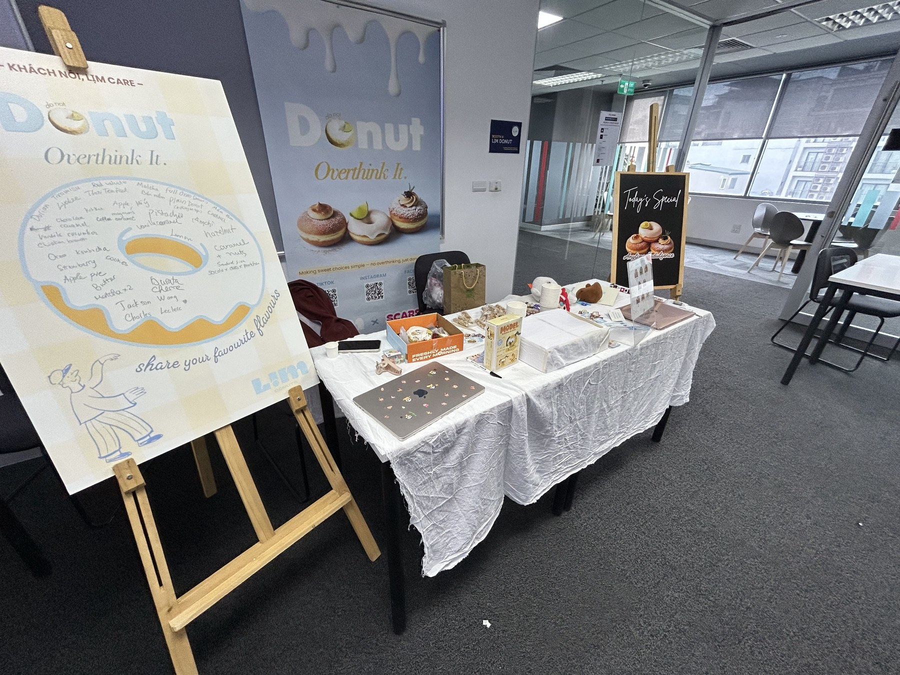
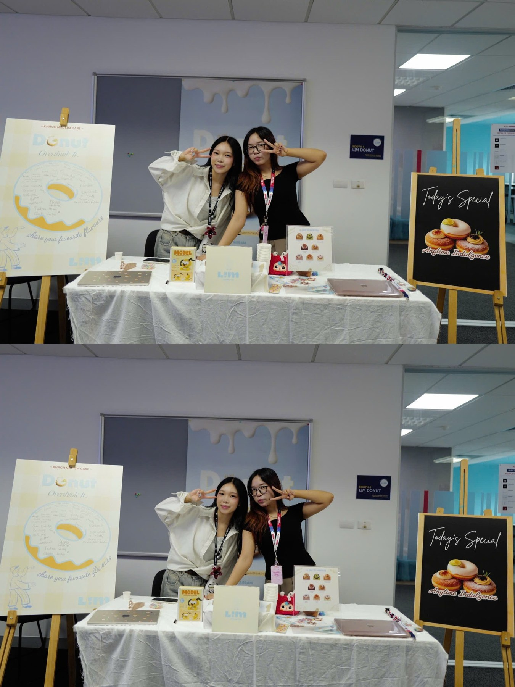
The idea got
a response.
The project achieved 40/45 and received the People’s Choice Award and Interactive Booth Award. The vote sheet recorded 27 votes for Lịm Donuts, the highest result among six booths.
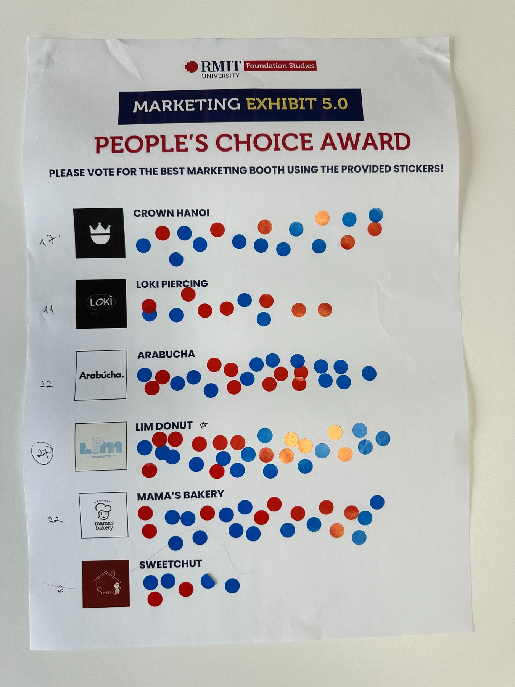
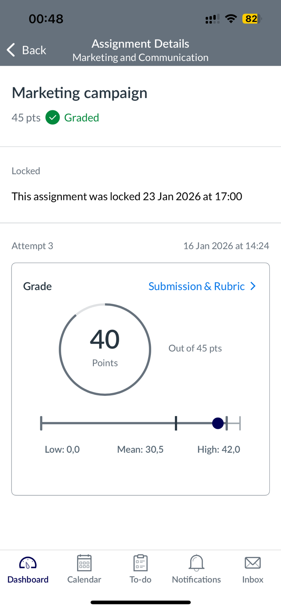
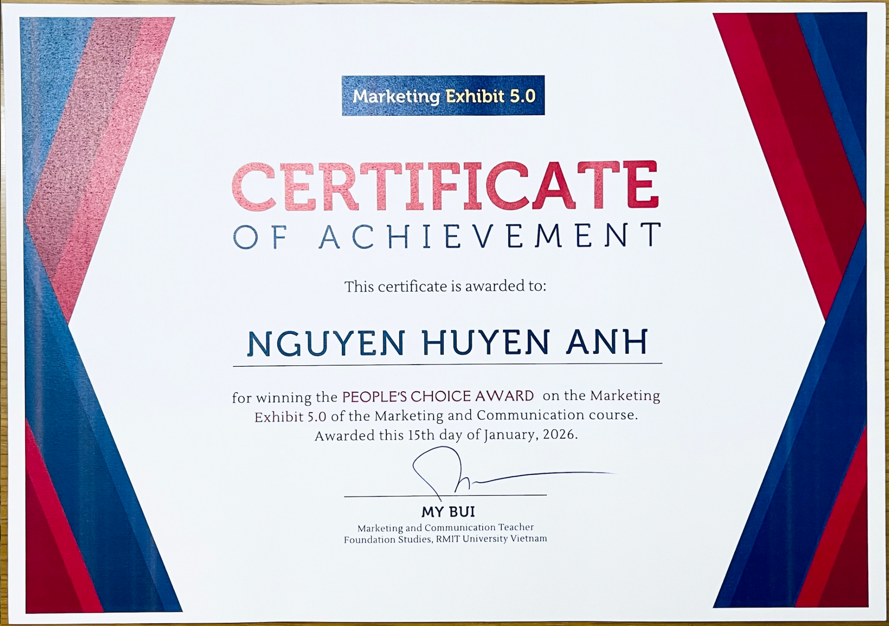
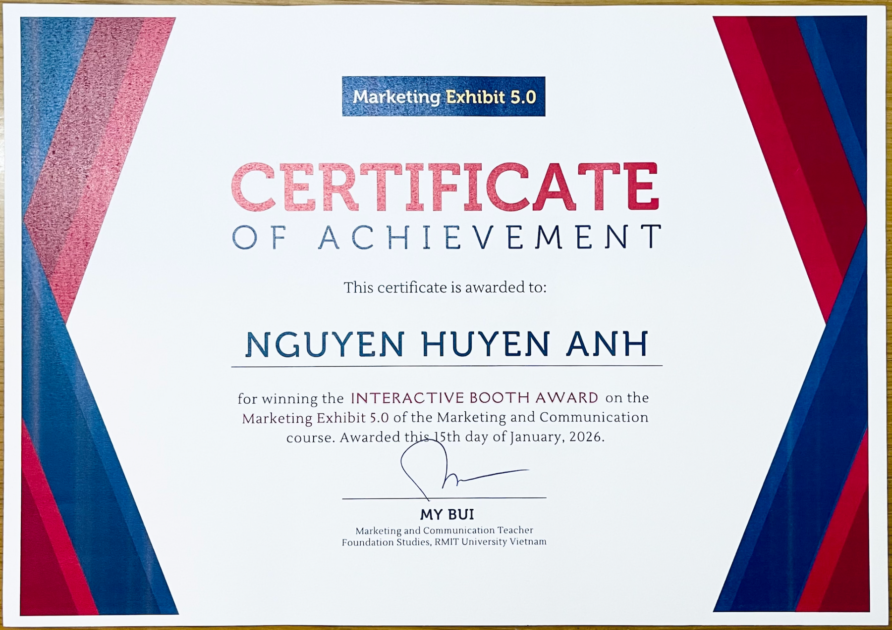
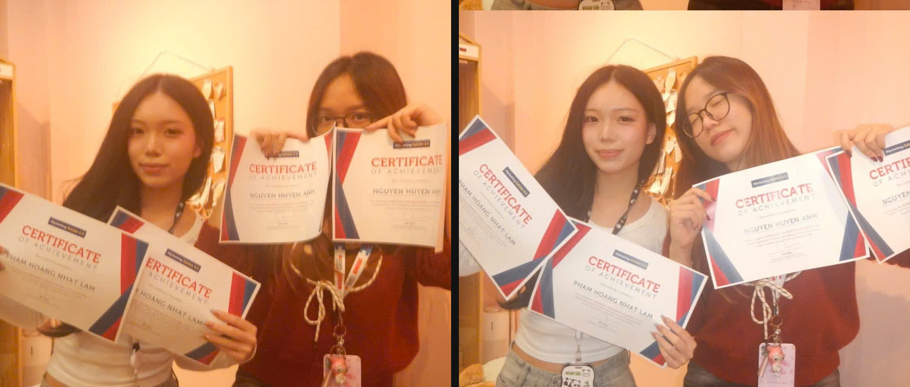
Campaign
in motion.
Short-form content developed to extend the campaign across digital touchpoints.
Want the
details?
The portfolio page is intentionally selective. The presentation and written submission are embedded below for reviewers who want the full strategic rationale, promotional mix, timeline and budget.